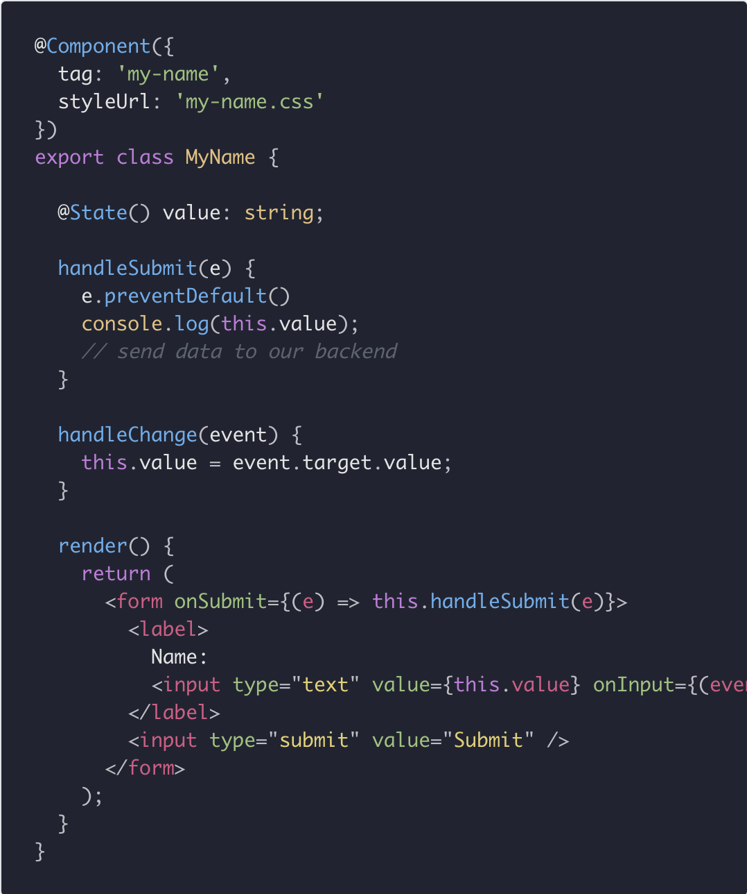
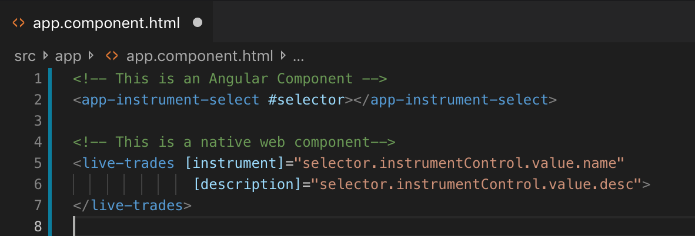
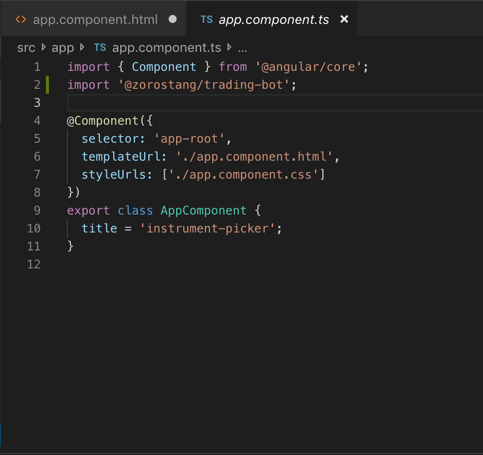

Using Stenciljs and NPM to build and deliver web components to any team, any framework, at
lightning speed ⚡
What
• Build Native Web Components that are supported by all browsers (ie &
edge with polyfills)• Publish your components to private Accenture scoped Org
Background
• Web Components• Design Systems• What is Ionic?• Why did they build Stencil?
Why
Framework AgnosticAngularReactVueVanilla HTML/JS• Improves developer onboarding by 10x because they can
immediately deliver feature rich components without the need for client/project specific
environment setup• This in turn improves project resource management by allowing PM’s
and architects to focus on component specifications and allows developers to focus on
implementation• Using NPM is the only way to make components easily indexed and
consumed in projects with just one command (+ it's a tool all developers are already
innately familiar with)• Great option for creating a Design System.• Adds flexibility around team management. Ability to align teams into
functional verticals. • Very useful when a component with "complex" functionality is required
to be used across several applications.
Micro-Frontends
Traditional monolith Front End Application is difficult to break up
into parallel tracks of work.Monolith
Micro-Frontends
Break up teams into verticals aligned with a mission and outcome.
Verticals
Micro-Frontends
Assign sections of the page to full stack teamThree "Teams"
How
Stenciljs only requires some jsx and modern ES6 Javascript knowledge.
With its gradual learning curve, developers can onramp smoothly and seamlessly.

How (Continued)
The integratation team can simply include the web component, as an ES
module, into any framework with just two lines of code after it is published to npm. We
also have the flexibility to import the component through the browser with a script tag.
Stencil takes care of the dynamic loading of each component with the later.


Browser Support
Stencil automatically adds all polyfills that might be requried in the
browser.- Adam Bradley Co-creator of Ionic Framework and
StencilJS
Developer Experience
• It can be cumbersome to write vanilla web components.• Stencil gives us a way nicer syntax that enables developers to write
web components in a more convenient and error-safe way.• With JSX, you don't have to worry about whether something is an
attribute or a property of a web component.
+
=
💪
Summary and Demos
We will showcase 4 individual demos that demostrate web components
integrated into:• Angular -- Realtime Crypto currency ticker using websockets
• React -- Search input form using font awesome and date picker
• Plain HTML -- Leaflet map consuming third-party fetch component to
get live divvy station locations• How to publish and pull from NPM. Manage multiple versions of 1
component